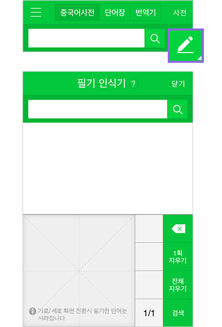
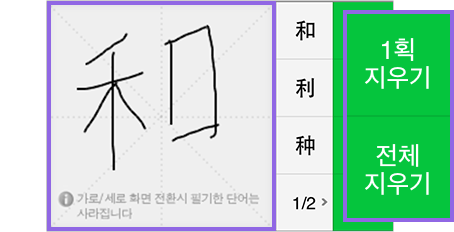
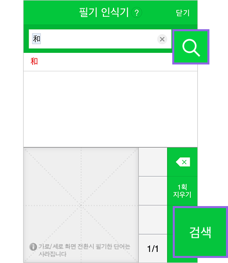

네이버 중국어사전에서는 한글, 병음, 한자로 단어를 검색할 수 있습니다. 사과를 검색하려면 한글 '사과', 또는 병음 'pingguo', 또는 한자 '苹果'로 검색합니다. 한자는 필기인식기를 사용하여 손쉽게 입력할 수 있습니다.
검색창 오른쪽에 있는 [입력기] 버튼을 눌러 필기 인식기 화면으로 이동합니다.
필기 인식 영역에 손으로 중국어(한자)를 씁니다. 잘못 썼을 때는 [1획 지우기]나 [전체 지우기]를 눌러 다시 쓸 수 있습니다.
필기 인식 영역 옆에 나타나는 추천 문자 중에서 원하는 글자를 선택합니다.
한자를 모두 입력하고 [검색] 버튼을 누르면 입력한 한자에 대한 검색 결과 페이지로 이동합니다.